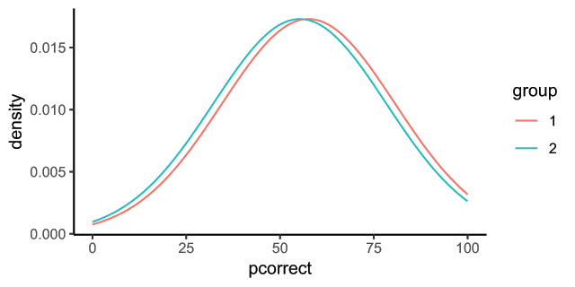
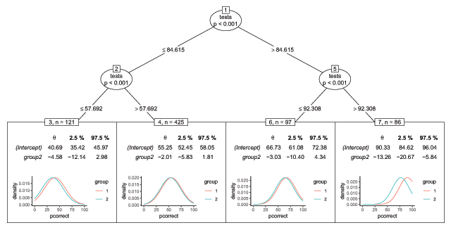
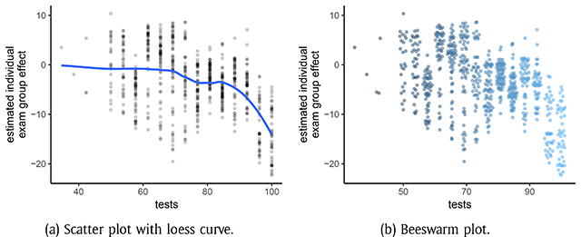
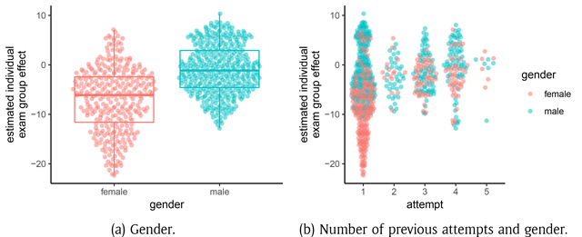

用你熟悉的那个回归模型，长出分层效应树或每个人的专属效应模型
set.seed(2017)，复现结果应与文中一致。
估计治疗效应的常规模型，都假定这个效应对所有人是一样的。基于模型的递归分割让我们可以放宽这一假定，去估计分层的治疗效应（模型树，model-based trees），甚至个体化的治疗效应（模型森林，model-based forests）。借助模型树，可以为不同的个体分层计算各自的治疗效应；这些分层是以数据驱动的方式找出来的，取决于个体的特征。基于模型的随机森林则能在模型参数（如截距和治疗效应）的意义上估计个体之间的相似性，进而利用这个相似度去估计个体化的模型。R 包 model4you 在两个随机分配的处置场景下实现了这些分层模型与个体化模型，重点是易用与可解释。
许多领域的研究都会把个体随机分到两个组别（接受不同的暴露），然后测量一个响应。例如临床试验中，患者被分到两个治疗组，通常一组接受新疗法或新药，另一组接受标准治疗或安慰剂。其他例子还有市场营销研究中的 A/B 测试，或任何两组之间的比较——比如下面要讨论的数学考试：学生被分到不同的考场、拿到略有差异的试题。下文我们把这两个组称为治疗组，把组别指示变量称为治疗指示变量，它只取两个值：0（个体在第一组）和 1（个体在第二组）。
治疗效应估计通常用一个简单模型来做，模型中唯一的协变量就是这个二值的治疗指示变量。在临床试验的例子里，患者接受新治疗时指示变量取 1，接受标准治疗时取 0。在 R 中，这样一个简单模型可以像下面这样估计：
base_model <- model(response ~ treatment, data)其中 response 是被测量的响应，treatment 是治疗指示变量，data 是包含这些变量的数据集。这里的 model() 可以替换成具体函数，例如 lm() 估计线性模型、glm() 估计广义线性模型，或 survreg() 估计参数生存模型。这类模型为数据中所有个体估计出同一个截距和同一个治疗效应，并允许预测其他个体在"接受"或"不接受"目标治疗时的响应。
当"所有人共享同一个截距和治疗效应"这一假定过于严格时，R 包 model4you 提供了两种选项：
1. 模型树（model-based trees）：识别这样的亚组——亚组内部模型参数相近，亚组之间模型参数不同。做法是寻找模型参数关于某个变量（特征）的不稳定性，并递归地把数据分割开。举例来说，如果算法发现男性和女性的治疗效应不同，数据就会被分割成两个亚组。关于模型树的一般性细节见文献 [9]，针对分层治疗效应这一特殊用途的细节见文献 [6]。在 R 中，只需一行代码就能算出模型树：
strat_models <- pmtree(base_model)注意 pmtree() 使用基础模型调用时所用的数据。它会自动把没有出现在模型公式里的变量（上例中即 response 与 treatment 以外的变量）当作潜在的亚组定义变量；这一点可以用 zformula 参数修改。
2. 个体化模型（personalised models）：用基于模型的随机森林，在模型参数的意义上估计个体之间的相似性。对每一个个体，都可以基于原始数据的一个加权集合估计出一个个体化模型，其中权重就对应那个相似度。关于个体化模型的细节见文献 [7]。为训练数据中的所有观测计算个体化模型也很简单：
pm_forest <- pmforest(base_model)
pers_models <- pmodel(pm_forest)同样地，这里潜在的效应修饰变量默认取"模型公式中未出现的所有变量"，可以用 pmforest() 的 zformula 参数自行定义。
下面我们通过一个示例演示模型树与个体化模型的应用。为此需要加载包，并——为保证可复现——设定随机种子；可视化还需要 ggplot2 [8]、ggbeeswarm [2] 和 gridExtra [1]。数据来自 psychotools 包 [10]。
library("model4you")
set.seed(2017)
library("ggplot2")
theme_set(theme_classic())
library("ggbeeswarm")
library("gridExtra")2014 年，因斯布鲁克大学经济与管理学院的一年级学生被分到两个考场：第 1 组在上午考试，第 2 组在第 1 组结束之后开始。两组的试题略有不同。数据可以按如下方式读取和整理：
data("MathExam14W", package = "psychotools")
## scale points achieved to [0, 100] percent
MathExam14W$tests <- 100 * MathExam14W$tests/26
MathExam14W$pcorrect <- 100 * MathExam14W$nsolved/13
## select variables to be used
MathExam <- MathExam14W[ ,
c("pcorrect", "group", "tests", "study",
"attempt", "semester", "gender")]为了考察考场与考试成绩之间的关联，我们拟合一个简单的线性模型：把答对题目的百分比对考场分组做回归。
bmod_math <- lm(pcorrect ~ group, data = MathExam)这个模型的估计值与置信区间可以这样算：
cbind(estimate = coef(bmod_math), confint(bmod_math))
## estimate 2.5% 97.5%
## (Intercept) 57.600184 55.122708 60.07766
## group2 -2.332414 -5.698108 1.03328这个模型可以通过绘制估计的密度曲线来可视化（见图 1）：
lm_plot(bmod_math)
lm_plot(bmod_math) —— 两个考组成绩分布的估计密度曲线，几乎完全重叠无论是估计值与置信区间，还是密度曲线，都提示两组之间几乎没有差别。但这真的对所有类型的学生都成立吗？
基于这个模型的一棵树，用两行代码就能算出来并画出来：
tr_math <- pmtree(bmod_math,
control = ctree_control(maxdepth = 2))
plot(tr_math, terminal_panel = node_pmterminal
(tr_math, plotfun = lm_plot))这里为了演示，把树的深度限制为 2（maxdepth = 2）；如果不做这个设定，会估计出一棵更复杂的树。图中的切点与效应估计做了取整处理。若想在 R 控制台里查看这棵树，可以用 print() 函数：
print(tr_math)
## [1] root
## | [2] tests <= 84.61538
## | | [3] tests <= 57.69231: n = 121
## | | (Intercept) group2
## | | 40.694789 -4.580056
## | | [4] tests > 57.69231: n = 425
## | | (Intercept) group2
## | | 55.251855 -2.012988
## | [5] tests > 84.61538
## | | [6] tests <= 92.30769: n = 97
## | | (Intercept) group2
## | | 66.730769 -3.033063
## | | [7] tests > 92.30769: n = 86
## | | (Intercept) group2
## | | 90.32967 -13.25576
##
## Number of inner nodes: 3
## Number of terminal nodes: 4
## Number of parameters per node: 2
## Objective function: -276167.6
group2 效应是 −13.26 个百分点，而其他三个叶节点只有 −2 到 −4.6。也就是说，那个"总体−2.33、不显著"的结论掩盖了一个真实存在的不公平。估计个体化模型几乎和分层模型一样简单：
forest_math <- pmforest(bmod_math)
pmods_math <- pmodel(forest_math)
## model parameters of first 6 students
head(pmods_math)
## (Intercept) group2
## 1 54.07712 -10.044714
## 2 40.17963 -6.326631
## 3 49.95619 -6.782954
## 4 53.19826 -9.367226
## 5 64.00692 -4.593500
## 6 41.13722 -6.465630依赖图（dependence plot）是可视化个体化模型的好办法：y 轴是考组效应（治疗效应），x 轴是学生特征，由此可以了解学生特征与考组之间的交互。需要注意的是，这张图与经典的偏依赖图 [3] 相关但并不相同——图中的每一个点对应数据集里的一个真实个体。由于在线测试正确率是网格化取值的，蜂群图（抖动散点图的一种变体）可能比散点图更能展现关系（两者都见图 3，图 3a 叠加了 loess 曲线）。可以看出，在线测试正确率与考组效应之间呈非线性关系：整个学期表现最好的学生，估计出的效应最强。
dpdat_math <- cbind(pmods_math, MathExam)
ggplot(dpdat_math, aes(x = tests, y = group2)) +
geom_point(alpha = 0.2, size = 1) +
geom_smooth(fill = NA, method = "loess") +
theme(legend.position = "none") +
ylab("estimated individual\nexam group effect")
ggplot(dpdat_math, aes(x = tests, y = group2, color = tests)) +
geom_quasirandom(alpha = 0.5, size = 1) +
theme(legend.position = "none") +
ylab("estimated individual\nexam group effect")
对于分类变量，比如此前尝试通过这门考试的次数（attempt）和性别（gender），可以用箱线图、蜂群图或两者的组合（如图 4a）。图 4b 的 x 轴是此前尝试次数，颜色表示学生的性别。由此可以看到：对于第一次参加这门考试的学生，性别在估计的个体考组效应上似乎起着更大的作用，而对其他学生则不然。
ggplot(dpdat_math, aes(x = gender, y = group2, color = gender)) +
geom_boxplot() +
geom_quasirandom(alpha = 0.5) +
theme(legend.position = "none") +
ylab("estimated individual\nexam group effect")
ggplot(dpdat_math, aes(x = attempt, y = group2, color = gender)) +
geom_quasirandom(alpha = 0.5) +
ylab("estimated individual\nexam group effect")
借助 model4you 包提供的工具，只需几行代码就能做出易于理解的分层模型与个体化模型，以及用于传达这些模型的、有说服力的可视化。
model4you 这个 R 包以易用性和可解释性为核心。用户可以拿一个自己熟悉、能理解的简单模型作为基础。目前可用的模型类型有线性模型（R 中的 lm()）、广义线性模型（glm()）以及生存模型（来自 survival 包的 survreg() 和 coxph()）。模型被限定为"只含一个二值协变量"（例如两种治疗选项）的情形。用户只需把这个模型对象直接塞进 pmtree() 或 pmforest()，取决于他想要的是分亚组的模型还是个体化的模型。
这些功能的基础由 partykit 包提供，那是一个被广泛使用的、处理树与森林的 R 包 [4, 5]。model4you 包为已被良好实现和检验的 partykit::ctree() 与 partykit::cforest() 提供了封装，并扩展了其功能，使其能够计算个体化模型，同时改善了可用性与可解释性。partykit 包同样是其他若干包的功能基础，包括 glmertree、psychotree、betareg、disttree、lagsarlmtree、palmtree（均在 CRAN 上），以及 trtf（目前可在 R-Forge 获取）。
CRAN 上的所有包都要经过与 R 包生态系统兼容性的标准检查。本 R 包包含示例与测试，并已在 Linux 86_64 与 Windows 上运行和检查过。
| 项目 | 说明 |
|---|---|
| 操作系统 | 应可在所有能运行 R 的操作系统上工作 |
| 编程语言 | R（3.1.0 或更高版本） |
| 额外系统要求 | 无 |
| 依赖 | R，partykit 包（1.2 或更高版本） |
| 贡献者 | 同作者：Heidi Seibold、Achim Zeileis、Torsten Hothorn |
| 存档位置 | CRAN，永久标识 cran.r-project.org/package=model4you；许可 GPL-2|GPL-3；发布者 Heidi Seibold；版本 0.9-3；发布日期 2018-11-12 |
| 代码仓库 | R-Forge，r-forge.r-project.org/projects/partykit/；许可 GPL-2|GPL-3；发布日 2019-01-18 |
| 语言 | 英语 |
本软件的编写有意让使用尽可能简单。最突出的使用场景是临床试验——那里"所有患者共享一个平均治疗效应"的假定过于严格，疗效取决于患者特征（例如性别、生物标志物等）。要做亚组分析（分层治疗效应），可以用模型树 pmtree()；要做个体化治疗效应，模型森林 pmforest() 提供了一条路径：估计患者之间的相似性，并用这个相似度去估计个体化模型 pmodel()。
目标受众是需要处理异质性治疗效应的人，例如医学研究者、制药公司或市场营销中的分析人员（A/B 测试）。总的来说，本软件适用于这样的研究者：他们面对的情形是比较两种暴露，而受试者的响应可能还取决于其他变量。目前该包支持的模型类型有限（线性模型、广义线性模型和生存模型），后续可以添加更多模型。若有问题，建议用户在 Stackoverflow 上使用 party 标签提问（http://stackoverflow.com/questions/tagged/party）。
资助声明：Heidi Seibold 与 Torsten Hothorn 受瑞士国家科学基金会资助（项目号 205321_163456 与 IZSEZ0_177091）。
利益声明：作者声明不存在利益冲突。
| 函数 | 作用 |
|---|---|
pmtree(model) | 在基础模型上做基于模型的递归分割，得到分层（亚组）模型树；zformula 指定候选分割变量，control = ctree_control(maxdepth = k) 限制深度 |
pmforest(model) | 拟合基于模型的随机森林，用于估计个体之间在模型参数上的相似性 |
pmodel(forest) | 用森林给出的相似度作为权重，为每个个体估计一个个体化模型，返回每人一组模型参数 |
lm_plot(model) | 把线性模型的估计结果画成密度曲线，便于直观比较两个组 |
node_pmterminal() | 与 plot() 配合，在树终端节点画出各亚组的模型估计（plotfun = lm_plot） |